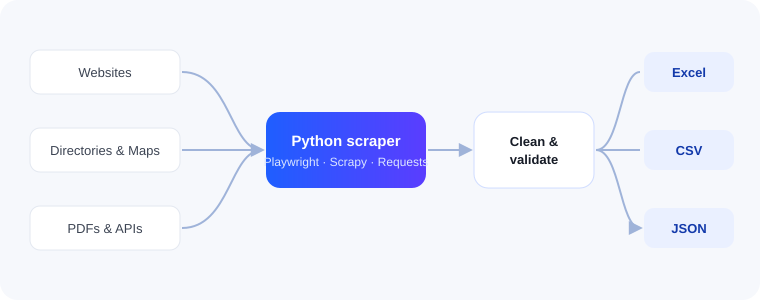

About Nithin Singh
Web scraping specialist, Python developer and Fiverr Top Rated Seller. Turning web data into business data since 2019.
Nithin Singh is a freelance web scraping and Python data extraction specialist who has been freelancing since 2019. He is a Fiverr Top Rated Seller with 1,300+ completed orders (historical figure) and works with international clients on web scraping, data research and lead generation.
My freelancing journey
I started freelancing in 2019, focusing on one problem businesses kept running into: the data they needed was on the web, but not in a form they could use. Over the years since, that focus has grown into a full practice covering web scraping, data extraction, data research and lead generation.
Most of that work has been delivered through Fiverr, where I reached Top Rated Seller status and completed 1,300+ orders with 966 Gig reviews (historical figures). This website is where I set out how I work, independently of any single platform.

Technical expertise
I work primarily in Python. For static pages and APIs I use Requests, httpx and BeautifulSoup. For large crawls I use Scrapy, and for JavaScript-heavy sites and browser workflows I use Playwright and Selenium. Pandas handles cleaning, deduplication and export, and I use openpyxl for formatted Excel reports and pdfplumber, PyMuPDF and OCR for PDFs.
My background includes QA test automation with Selenium, Playwright and Pytest. That shapes how I build scrapers: explicit waits instead of guesswork, logging and screenshots on failure, and code structured so it's easy to maintain. When a client's team doesn't use Python, I package tools as Windows executables.
Working with international clients
I work remotely with clients across different countries and time zones, and I'm used to sources in multiple languages and local formats: addresses, phone numbers, currencies and units. Communication is written and clear, with progress updates on longer projects.
My approach to data extraction
- Understand the goal. What decision or workflow the data feeds decides the fields, sources and format.
- Inspect the source. Check for APIs, embedded JSON and rendering method before writing code.
- Sample first. Agree on columns and quality with a small sample.
- Extract completely. Plan pagination, search caps and segmentation so nothing is silently missed.
- Validate and deliver. Deduplicate, normalise, keep source URLs, and report anything that couldn't be collected.
Professional values
- Accuracy over volume. A smaller correct dataset beats a large unreliable one.
- Transparency. Clear scope, honest limits and no inflated promises.
- Responsibility. Public data only, polite request rates and respect for privacy law.
- Confidentiality. Your project details and data stay private.
- Reliability. Deadlines agreed realistically and met.
Have a data project in mind?
Share the website, the fields you need and a rough record count. You'll get a clear plan, a quote and a sample before the full run.